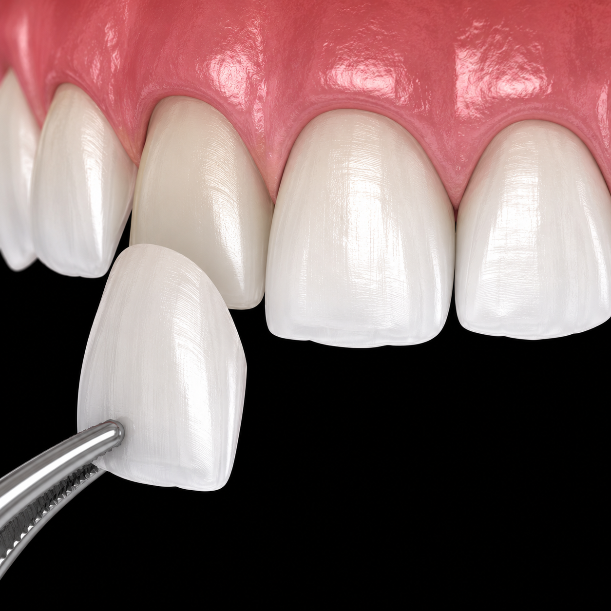

Orthodontic Braces (Clip)
Correct crooked teeth, crowding, over-bites, and under-bites to achieve complete alignment and restore comfort. Dr. Tania offers metal, ceramic, and lingual (hidden behind teeth) braces tailored to each patient's anatomy and lifestyle.
Book a Consultation
Invisalign® Clear Aligners
Darshan Dental is the pioneer Invisalign provider in Kanyakumari. Straighten your smile discreetly and comfortably using virtually invisible, removable clear aligners planned with advanced 3D CBCT imaging.
Book a Consultation
Tooth Filling
Fill cavity decay spots and restore the natural strength and appearance of your teeth. We use durable resin composite materials precisely shade-matched to your enamel for a natural, long-lasting result.
Book a Consultation
Root Canal Treatment
Save heavily decayed or infected teeth with painless cleaning and sealing of the root canals. Preserves the natural root structure and eliminates infection, restoring normal tooth use.
Book a Consultation
Dental Bridges
Bridge the gaps caused by missing teeth using custom porcelain or gold crowns anchored safely to neighbouring teeth. Restores natural chewing mechanics and blends seamlessly with your smile.
Book a Consultation
Complete Dentures
Replace full arches of missing teeth with modern, customized removable dentures designed for absolute comfort. We also offer implant-supported options for a fully locked-in, permanent feel.
Book a Consultation
Dental Implant
The gold standard for missing teeth. Titanium root screws anchor crowns permanently, acting and looking exactly like real teeth. Prevents jawbone deterioration and fully restores bite forces and speech.
Book a Consultation
Veneers
Thin porcelain shells placed on the front of teeth to correct heavy stains, chips, gaps, or mild crowding. A fast-track solution to a complete smile makeover with highly stain-resistant ceramic surfaces.
Book a Consultation
Implant Rehabilitation
Full arch restoration combining CBCT pre-surgical plotting with a custom hybrid prosthesis to restore full chewing forces and original facial symmetry. Uses high-precision digital surgical guides throughout.
Book a Consultation
Tooth Extraction
Sterile, controlled extraction of severely decayed, crowded, or impacted wisdom teeth to keep the mouth healthy. We use advanced bone-preserving techniques with full post-procedure recovery support.
Book a Consultation
Cleaning the Teeth
Advanced ultrasonic scaling sweeps away plaque, tartar, and surface stains — keeping your gums in peak health. Recommended every six months to prevent gingivitis and chronic breath issues.
Book a Consultation
Child Dentistry (Pediatric)
Specialised children's care offering stress-free treatments, cavity protective seals, and teeth growth monitoring in a gentle clinical environment. Includes habit-breaking appliances and fluoride therapy.
Book a ConsultationNot Sure Which Treatment You Need?
Talk to Kanyakumari's most trusted orthodontic team — we'll guide you to the right treatment plan.